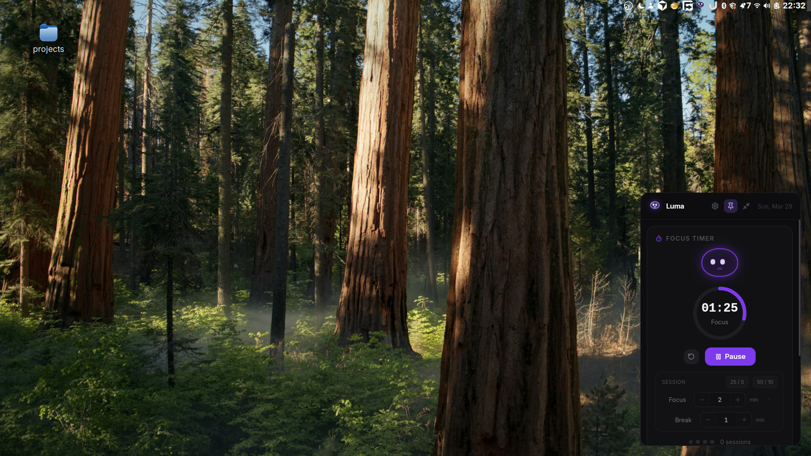
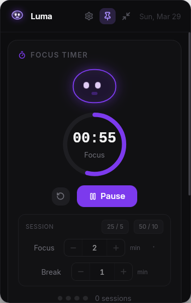
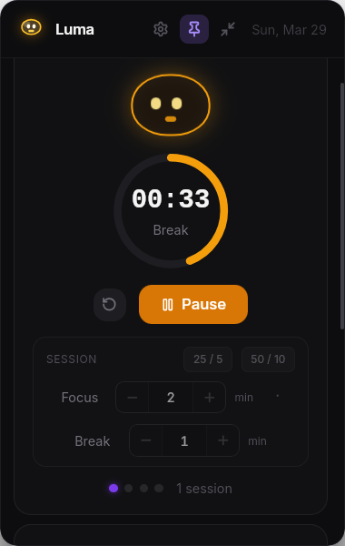
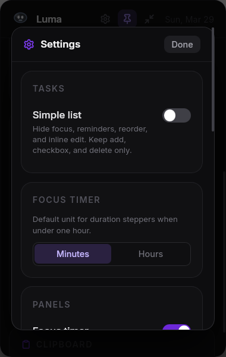
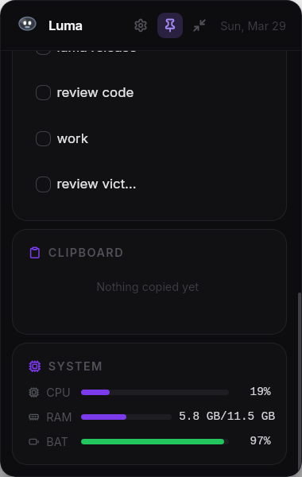
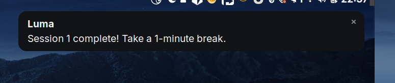
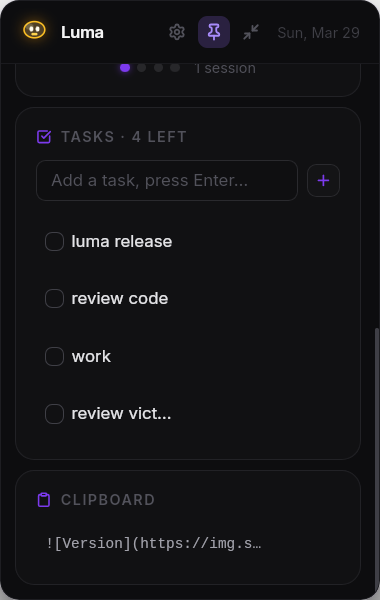

Focus & break timer
Presets or custom lengths, clear progress, and a companion that reacts to your session—without nagging you.
Run focus and break sessions, keep a tight task list, dip into clipboard history, and peek at system stats—without a cluttered desktop. Built for Linux, designed to stay out of your way.
Everything in the panel is optional—tune it in Settings
Presets or custom lengths, clear progress, and a companion that reacts to your session—without nagging you.
Capture what matters, set optional nudges, or switch to a minimal list when you want zero extra chrome.
Reuse recent clips quickly—handy when you’re jumping between windows and tabs.
CPU, memory, and battery where available, in one small card.
Toggle panels, notifications, and layout. Open your data folder or reset local data when you need a clean slate.
Designed around tray workflows and typical desktop quirks—see the README on GitHub for distro tips.
See it in action







Grab the latest .deb, AppImage, or .rpm from GitHub Releases. Prefer building yourself? Check the README for dependencies and build steps.
Small tool, local-first
Luma is a desktop productivity companion: it keeps timers, tasks, and utility panels in one lightweight window you open from the tray. Your data stays on your machine in a simple local store—no account required.
For developers: Luma is bundled with Tauri (native shell) and a web UI stack. That’s why the install is small and startup stays snappy. If you’d like to contribute or package it for another distro, the source and build notes are on GitHub.